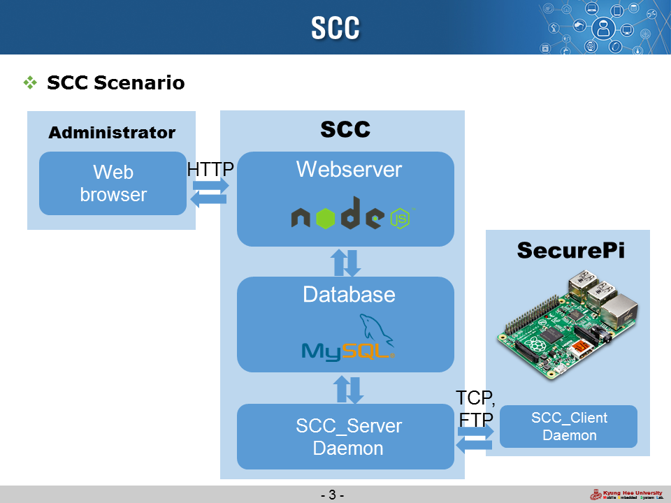
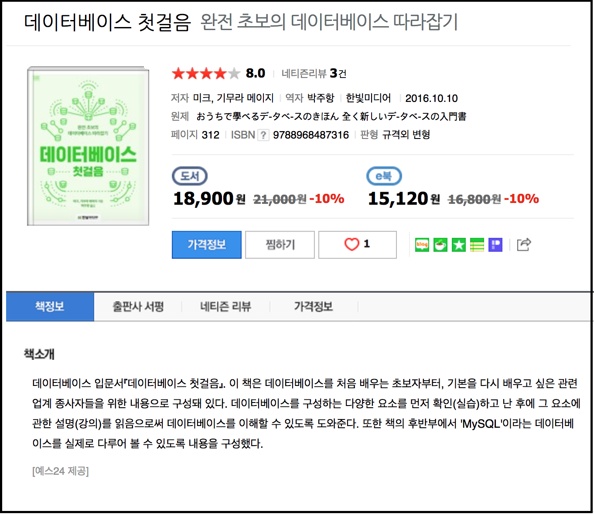

[서평] 데이터베이스 첫걸음(저.미크, 기무라 메이지)를 읽고
들어가기에 앞서
데이터베이스. 나에게는 너무 어렵게 느껴지는 주제였다.
두 번의 프로젝트에서 데이터베이스를 사용해 본적이 있다. 하나는 2015 전자과 공모전이였고, 다른 하나는 동아리 넥스터즈(Nexters)에서 진행한 나날로그(Nanalog)라는 웹 프로젝트였다. 하지만, 두 번 모두 데이터베이스를 제대로 알고 사용한 것이 아니였다. 전자과 공모전에서는 데이터베이스의 개념을 모르고 인터넷에 있는 예제만 따라했었고, 나날로그 프로젝트에서는 다른 팀원이 DB설계와 구축을 하였었다.
연구실에서도 HeidiSQL이라는 GUI DB Tool을 사용하여, 1년 전, 경희대학교 서울어코드 홈페이지를 수정해보았지만 단순한 데이터 변경이였기 때문에 데이터베이스의 본질을 이해할 수는 없었다. 그리고 그 당시 DB Table을 잘못 건들여서 꽤 고생했던 기억이 있었기 때문에, 나에게 데이터베이스란 어려운 주제였고 함부로 건들기 힘든 영역이였다.
그런 나에게, 이번 겨울 방학 연구실에서 주어진 임무는 SCC (Security Control Center)라는 프로젝트를 완성하는 것이다. (아직 개발중입니다.)

SCC에서 데이터베이스의 사용은 필수적인데, 어떻게 할까 고민이 많던 와중 한빛미디어의 나도 리뷰여 서평단은 좋은 기회가 되었다. 서평을 작성해야할 책 목록에는 “데이터베이스 첫걸음-완전 초보의 데이터베이스 따라잡기”이라는 내 수준에 알맞아 보이는 책이 있었고 신청을 하여 책을 받아볼 수 있었다.
첫 인상

이 책은 데이터베이스(DB)와 DBMS에 대한 기초적인 지식을 설명하고, MySQL을 사용한 실습의 내용도 포함되어 있다. 이렇게 데이터베이스의 전반적인 내용을 모두 담고 있기 때문에, 자칫 깊게 들어간 내용은 빠질 수도 있겠다는 생각을 하였다. 물론 다 책을 다 읽고 보니 고급 기술까지 모두 포함되어 있지는 않은 것 같다. 그러나 서비스를 제공할 서버를 설계하고 개발하는데 필요한 CRUD의 내용은 모두 포함하고 있다고 생각한다.
책의 장점
이런 IT 전문서적은 개발자를 독자로 작성된 경우가 많다. 그러나 이 책은 개발자(특히 주니어 개발자)뿐만 아니라 서비스를 기획하는 기획자가 읽어도 좋은 내용들이 많이 포함되어 있다.
1장에서 4장까지 “데이터베이스란 무엇인지”, “어떤 종류의 DBMS가 있는지”, “데이터베이스의 운영비용”, “아키텍처 설계를 위해 알아야할 내용”들이 정리되어 있다. 나는 시스템 분석 및 설계라는 전공과목을 수강하였는데, 그 때 간략하게 배웠던 내용을 다시 한번 일깨우는 시간이 되어 좋았다.
그 후 5장부터 8장까지 MySQL을 이용한 실습내용은 앞서 언급한 SCC 프로젝트를 진행하는데 큰 도움이 되었다. 실제로 ER Diagram을 그리고 그에따라 MySQL을 사용한 테이블을 만들었다. 아직 SCC 프로젝트가 완성되지 않았는데 중간중간 책의 내용을 참고하며 수정을 하면 좋을 듯 하다.
9장과 10장은 데이터베이스의 성능과 백업과 관련된 내용이 있다. 지금 당장은 사용하지 않을지라도 꼭 필요한 내용이기 때문에 문제가 발생하였을 때 참고용으로 보면 큰 도움이 될 것이다.
책의 단점, 아니 아쉬운 점
내가 생각하는 이 책의 아쉬운 점은 일본식(?) 문장의 서술이다. 저자가 일본인들이기 때문에 예시도 모두 일본 상황과 관련된 내용이 많았고, 과거 영어 문법책(영어를 일본어로 번역하고 그것을 다시 한국어로 번역한 문법책)을 보는 느낌이 났다. 물론 이게 안 좋은 것은 아니다. 하지만 “클라이언트/서버의 관계를 , 클라서버 관계라고 부른다~”라는 표현이 이질적으로 느껴졌다.
그럼에도 이 책을 추천하는 이유
일단 데이터베이스를 전반적으로 설명하는데 보기 쉬운 그림과 표를 사용한다는 점이 좋다. 얇은 책의 두깨도 읽는데 부담 없이 즐길 수 있었다. 그리고 가장 많이 사용되는 RDBMS인 MySQL을 사용한 실습이 있다는 점이 나와 같은 초보자들에겐 좋다고 생각한다. 이는, MariaDB나 PostgreSQL과 같은 다른 RDMBS를 사용하는데도 어려움이 없도록 기초 개념을 잡을 수 있을 것이다.
마무리하며
데이터베이스란 어려운 주제가 아니였다. 지금까지 겁먹었던 내 자신이 부끄럽다. 요즘 특히 빅데이터, AI, 챗봇 등의 주제가 뜨고 있기 때문에 데이터베이스를 알고 있는 것만으로도 내가 할 수 있는 일들이 많아 질 것이다. 좋은 기회를 얻어 리뷰 서평을 쓸 수 있었고, 공부할 수 있어 기쁘다.